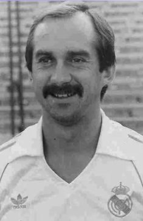

The History of Real Madrid CF
1941-1950
This period would give rise to the entity's future success stories and also to the rivalry with Barcelona. The Chamartín stadium had to be rebuilt and a new team had to be put together and brought up to speed for competition. Thanks to Santiago Bernabéu, all these challenges were met with aplomb. It was in this decade that the foundations were set for what would later be recognised as the ‘Best Club of the Twentieth Century’.
The Whites tried to alleviate the effects of the Civil War (1936-39), which left it without some of its most emblematic names. Some important players were brought in, such as Pruden, Corona and Bañón. In 1943, in the semi-final of the cup, Real Madrid met Barcelona. In Les Corts, the eleven azulgranas won 3-0. In the return match, the Whites knocked out their opponent with an extraordinary comeback. Madrid won 11-1, and an eternal rivalry was born.
On the 15th of December 1943, Santiago Bernabéu became the club's president. It was the start of the legendary mandate in which the club pulled off some great deeds. He took charge intent on building bridges between all the clubs. In 1948 he was named president of honour and merit of the Whites “for his extraordinary work and continuing concern for the well-being of the Sociedad Real Madrid Club de Fútbol”.

Real Madrid faced Valencia in the final (June 9th 1946), ten years after the team had won its previous Copa de España. In the Montjuïc stadium the Whites dominated the game, beating Valencia 3-1, to win the cup once more. The mayor of Madrid presented Ipiña with the Sports Medal of the City for his part in 237 official matches. Each player received a leather purse with a one thousand peseta (6€) note.
A dream come true, the Nuevo Chamartín stadium
The Chamartín had become too small to house so many members and fans and the president, Santiago Bernabéu (enlazar ficha), wanted the club to be at the forefront of European football. After 30 months of construction, on the 14th of December 1947 the Nuevo Chamartín stadium was opened. The ground was inaugurated with a friendly match against Os Belenenses and its first La Liga game was against Athletic de Bilbao (5-1).
The Real Madrid Newsletter
Along with the Nuevo Chamartín and the team's triumphs, came the need to communicate with the fans. On the 1st of September 1950 the Real Madrid Newsletter was born. The front page contained a message from Bernabéu: “I hope this Madrid newsletter is a great success. Advice from an old-hand: keep your friends close, but your enemies even closer. Greetings to the merengues”.
1951-1960
This was a brilliant decade. A pleiad of players, led by Alfredo Di Stéfano, put Real Madrid at the summit of football. The team that won five European Cups in a row amazed the world with its spectacular brand of football. An endless torrent of success made the club the most decorated in Europe. It was proclaimed the 'king of kings' and it won the first edition of the Intercontinental Cup (1960) to put the icing on the cake.
Football in Europe was being played at a high standard. Aware of this fact, at the start of the 50s, renowned French journalist Gabriel Hanot dreamed up a competition that would bring together the champions of each European league. His colleague Jacques Ferrán joined the project. Between them they drew up some regulations that reached the headquarters of the Union of European Football Associations (UEFA). The proposal was much to the liking of the heads of French publication ‘L’Equipe’, which organised the tournament.
They named a commission that included Santiago Bernabéu as one of its vice presidents. The championship became a reality in 1956. Real Madrid won the first European Cup in history on the 13th of June that year. It was the first of the five consecutive cups it would win. This great feat was achieved at the hands of one of history's greatest footballers, Alfredo Di Stéfano, and during Bernabéu's presidency.

Madrid discovered Di Stéfano in the club's fiftieth anniversary year (1952), when the team took on Millonarios (4-2). Since then the club had its sights set on him and the following year he made his debut as a Madrid player. He became the best footballer in the Whites' history, receiving two Ballon d'Ors (1957 and 1959) as one of the stars of the team that ruled Europe for five years in a row. Everyone was enchanted by his wizardry and he raised the bar for the rest.

In the 1959-1960 season, ex-Madrid player Miguel Muñoz (enlazar ficha) took the reins of Real Madrid. He won the Fifth European Cup in his first season as manager, becoming the first footballer to win the European Cup as a player (three times) and as a manager. In 1960, the merengues were also crowned champions of the world as they won the first edition of the Intercontinental Cup (Real Madrid 5-1 Peñarol de Montevideo).
From the Nuevo Chamartín to the Santiago Bernabéu stadium
With Santiago Bernabéu as the club's president, the institution grew, broke boundaries and became a synonym for success. Twelve years after taking charge he received a great honour from the Members General Assembly. On the 2th of January 1955 it was approved that, as of that date the Chamartín ground would be called the Santiago Bernabéu stadium, “as a sign of recognition of the current president's work”. The president thanked all those present for the distinction and put the idea to the Board of Directors, who approved it.
The first record in La Liga (1954-55)
In the Metropolitano, home to Atlético de Madrid, the Whites successfully defended their league title with a day to remember. Not only did they win, but they did so in record-breaking style. It was the first time a team had won 46 points. The club received a letter of congratulations from the National Ministry of Physical Education and Sports. It was the prelude to an unprecedented run of results in the mid-fifties.Welcome, ‘Cañoncito pum’
Real Madrid wanted to continue filling its stadium's trophy cabinets and on the 1st of August it strengthened its team with the inclusion of one of the best left wingers in the world, Ferenc Puskas. He was nicknamed ‘Cañoncito pum’ because of his exceptional shooting and eye for goal. He became a Madrid legend, forming a formidable strikeforce with his teammates Di Stéfano, Rial, Kopa and Gento.
\1961-1970
The team was going through a period of change. In Spain it was far superior, winning eight league championships, five of them on the trot and including and league-cup double. Overseas it won its Sixth European Cup, with the ‘yé-yé’ team.
In the 1961-62 season, Real Madrid again enjoyed an excellent campaign as they claimed a league and cup double, and were runners-up in the European Cup. On 18 March 1962, Madrid sealed another title win at their stadium, with two matches to spare. On 8 July 1962, the Whites beat Sevilla 2-1 in the cup final.
They were the kings of Spain and of Europe. On the 11th of May 1966, Real Madrid were crowned champions of Europe once again, against Partizán (2-1). Without Di Stéfano and Puskas, the most experienced player was Gento. The rest of the team was made up by Araquistáin, Pachín, Pedro de Felipe, Sanchís, Pirri, Zoco, Serena, Amancio, Grosso and Velázquez. After winning their Sixth European Cup, four of the players were photographed impersonating the Beatles. They then became known as the ‘ye-yé’ Madrid because of the chorus of the English group's song ‘She Loves You’.
The magic of 'The Wizard'
Bernabéu realised that the team needed some new faces if they were to stay at the top. In 1962 he signed a 22-year-old Galician striker. Amancio Amaro, 'The Wizard', was the main architect of Deportivo de la Coruña's promotion to the Primera División. Right from his arrival at Real Madrid he was a regular starter for Miguel Muñoz, making the right wing his own and winning over the Madrid faithful with his brilliant performances.
The home of the Whites' youth academy
Fulfilling his dream of a club sports centre, Santiago Bernabéu opened the Ciudad Deportiva on the 18th of May 1963. It was a sports complex that boasted football pitches, athletics tracks and tennis courts. Shortly afterwards a basketball court, swimming pools and an ice skating rink were opened. The ground-breaking facility on the Avenida de la Castellana was greatly admired. It both enhanced the club's assets and brought in the future stars to the Whites' youth academy.
‘The Blond Dart’ says adios
After eleven seasons delighting the fans at Real Madrid, Alfredo Di Stéfano said his goodbyes to the Madrid faithful. An extraordinary career came to an end with his last official match on the 27th of May 1964. Three years later, he was given a well-deserved testimonial match against Celtic Football Club. In the 13th minute, the Madrid idol took off his captain's armband and handed it to Grosso. The Bernabéu said good bye to him with a standing ovation in recognition of a career that included 308 official goals in a white shirt.
Five consecutive leagues
The investments in the club continued to produce results. On the 18th of April 1965 Madrid won its fifth consecutive La Liga title. It was the first time in the history of the club that five consecutive titles had been won. That season (1964-65) the first players of the team that would later become known as the ‘Yeyé’ joined the club: Grosso, Pirri, Sanchís and De Felipe.
1971-1980
The decade in which the team won its sixth La Liga trophy to keep was also marked by the death of Santiago Bernabéu. Football was in mourning on the 2nd of June 1978 at the loss of the president who took Real Madrid to the top. Luis de Carlos replaced his best friend and mentor. He ran the Whites for seven years. In that time he was able to embody and transmit the values of the club, earning himself recognition around the world.
The team proved to be very solid at home in the league in the 1978-79 season, with only five teams taking a point from the Bernabéu: Espanyol, Sevilla, Hércules, Las Palmas and Atlético de Madrid. Molowny knew how to get the best out of his players, also making a difference on the road. The win in the Molinón (0-1, with a goal from Santillana) was key to the merengue's sixth league title.
The team's brilliant performances were tarnished by the death of the club's president. Real Madrid wanted to make a posthumous gesture of thanks to the late Santiago Bernabéu. The goal was for his great work at the club to live on in the collective memory. On the 31st of August 1979 the first edition of the tournament that bore his name was played. Four of continental football's great champions took part: Real Madrid, Ajax, Bayern Munich and Milan.
Miguel Muñoz goes out at the top
The father of the ‘Yeyé’ Real Madrid team, set a new record for length of service as the team's manager. In his fourteen years at the club he left quite a legacy behind him. Under his watchful eye trophies poured into the Santiago Bernabéu's trophy room. In the 1973-74 season he passed the baton to Luis Molowny.
Cup winners against the great rival
In 1974, thirty years after the birth of the great rivalry between Real Madrid and Barcelona, the Whites thrashed the azulgranas (4-0) in the cup final. Luis Molowny was the man in charge. The new coach had got off to a flying start. He was able to maintain the fighting spirit instilled in the team by his predecessor, Miguel Muñoz.
Juanito, a Real Madrid legend
On the 19th of November 1976 the club signed Juan Gómez ‘Juanito’. Playing in a Real Madrid shirt was a dream for the player from Malaga that came true one year later. The winger was a hot-tempered player whose quality and skill was evident every time he touched the ball. His first match with the team was in the Camp Nou, against Barcelona. He put in an outstanding performance, contributing to the Whites' 2-3 victory. In his first season the Whites won La Liga and he more than did justice to his white shirt.
"We have to sign number 8”
In the 1976-77 season, Real Madrid was looking to up its game by bringing in some big names. Santiago Bernabéu and Agustín Domínguez, the club's general secretary, travelled to Düsseldorf, at the invitation of Borussia Mönchengladbach. They watched the match between the German team and Dynamo Kiev. The president of Real Madrid turned to Domínguez and said: “The number 10 is a good player, but we have to sign number 8”. The player was Uli Stielike, an emerging name in German football. Hours later, on the 29th of April 1977, he signed his commitment to Madrid on a piece of hotel paper, until his contract could be drafted.
The whitest Copa del Rey in history
On the 4th of June 1980 an unprecedented and unrepeatable Copa del Rey final was played in the Bernabéu. The clash between Real Madrid and their reserves, Castilla, was won 6-1 by big brother. But the result was trivial. The great thing about the final was being able to see two teams from the same club play together. Whoever won, the cup would be staying in the capital. It was a club party in a Bernabéu that was packed to the rafters. That season Madrid sealed another double by winning La Liga to boot.
1 2 3
Credit: RealMadrid.com